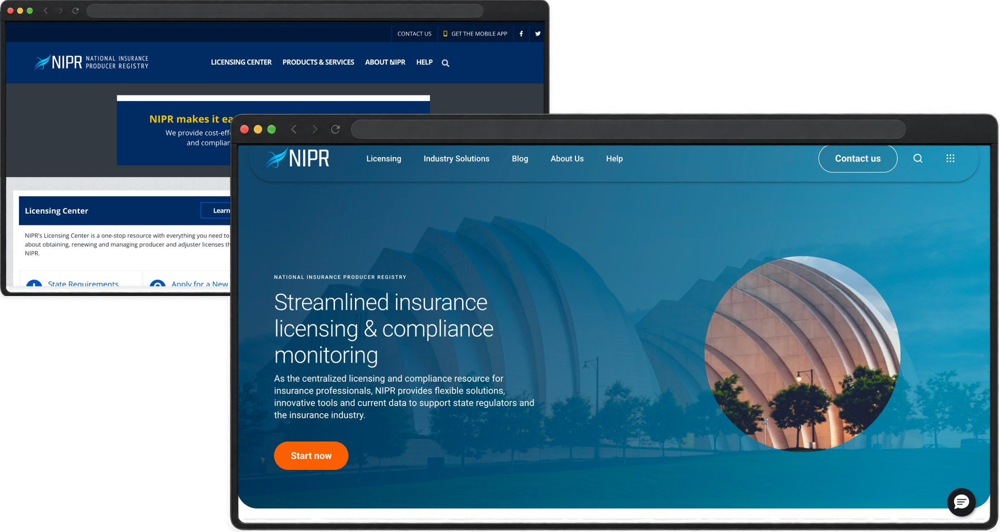
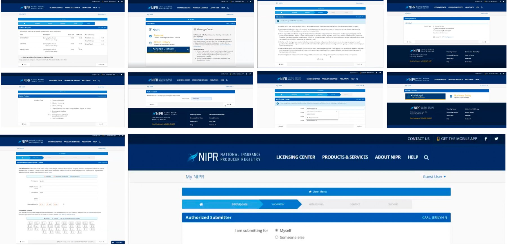
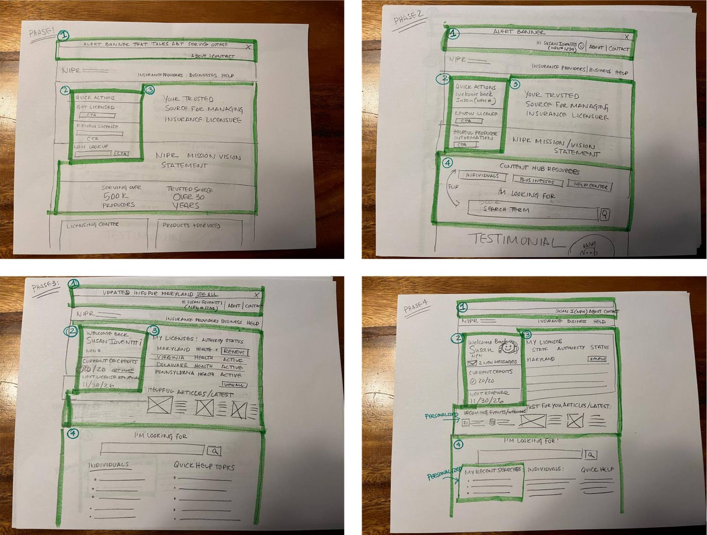
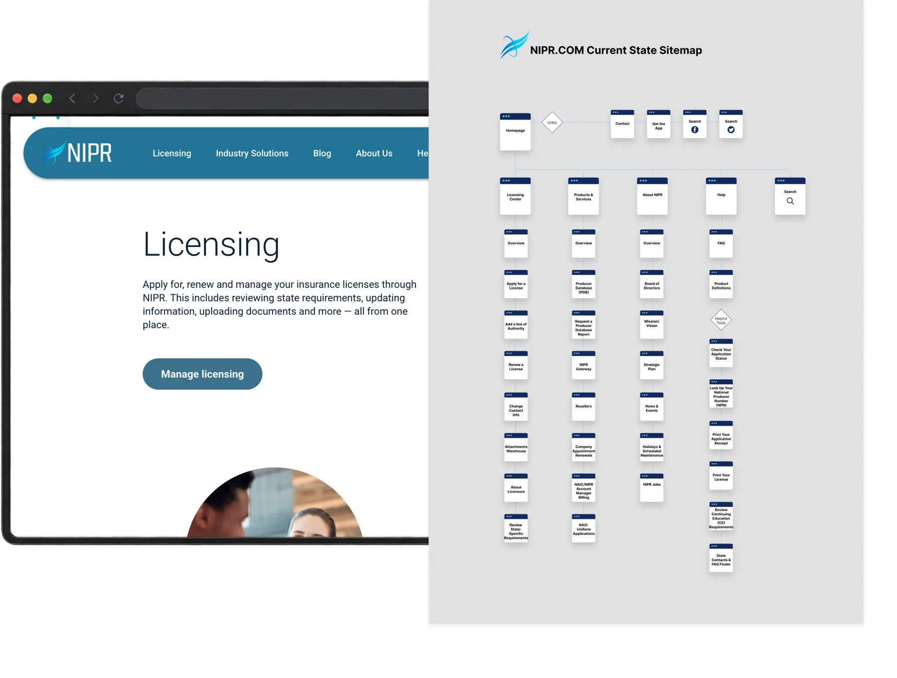
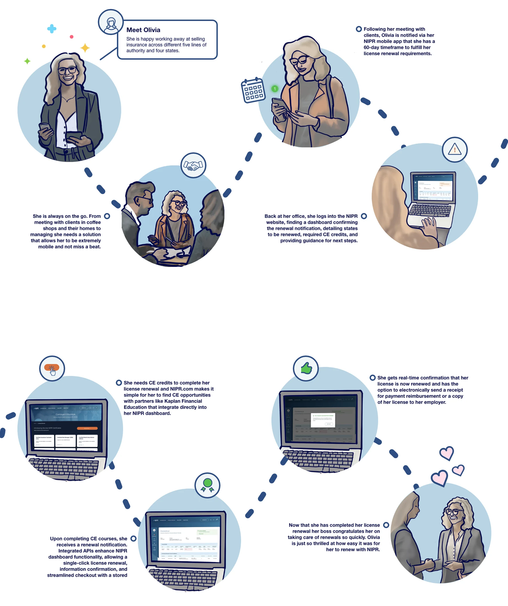
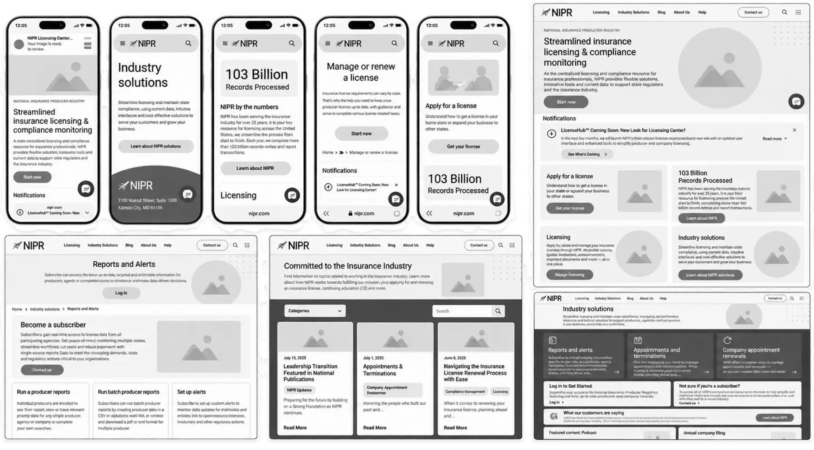
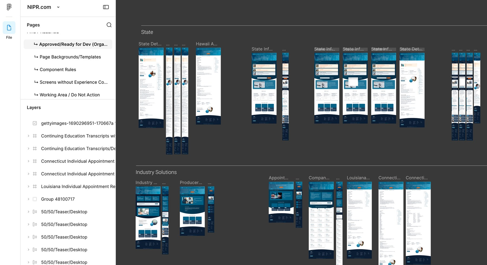
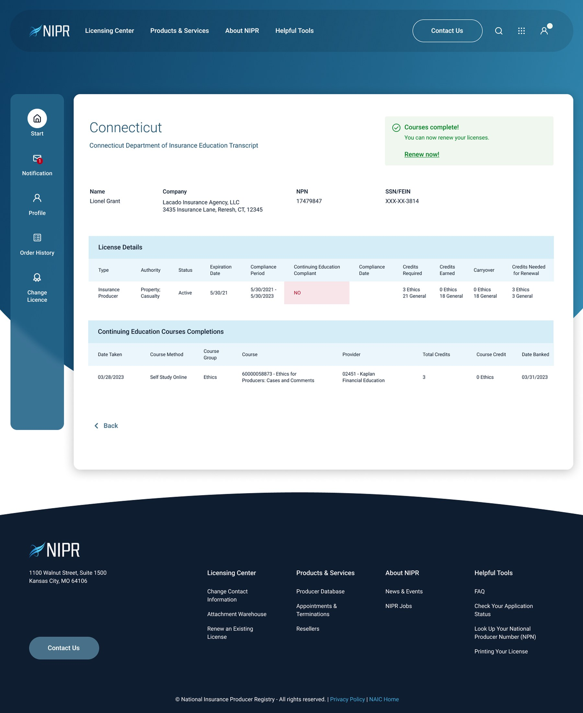
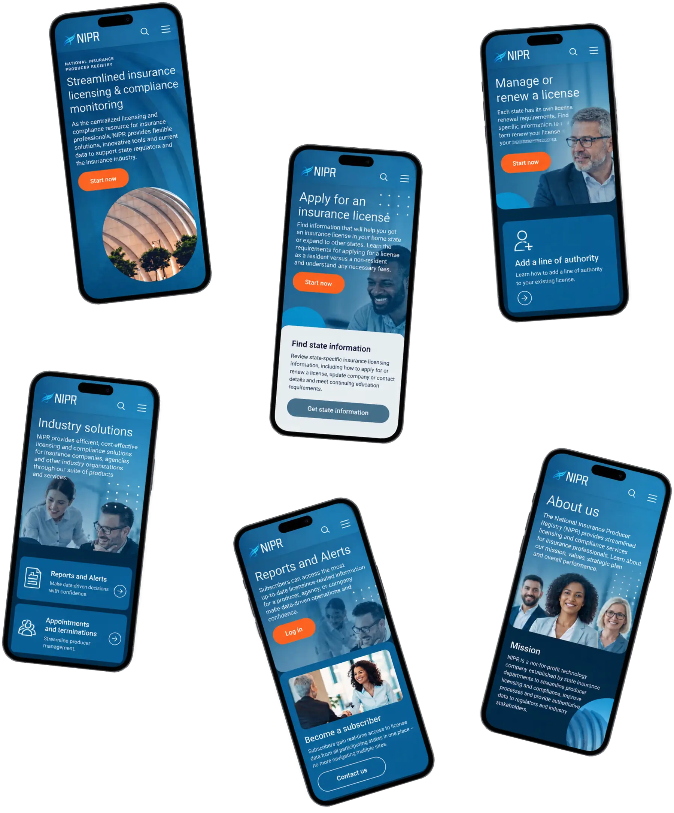

NIPR
One task. Fourteen open windows.

Overview
NIPR came to us for a Material Design system, but our audit revealed a much deeper UX problem. Some users needed up to 14 windows open just to register. I led NIPR’s experience team through a four-month redesign, creating unified flows and a new design system that transformed disconnected applications into one simpler, cohesive experience.
The Problem
The only thing holding it together was the person using it.
The system held everything it needed to. The user had to assemble the experience themselves, remembering what was done, what came next, and how any of it connected.

The Opportunity
Before we could simplify it, we had to inventory all of it.
Every page, component, form, status and repeated pattern, catalogued, then interrogated with the client’s own designers and developers in Sketchin Sessions™.

Making sense of complexity
The company’s structure shouldn’t become the customer’s navigation.
The old architecture mirrored internal systems. The new one follows the order a person actually needs information.

Exploration
Thinking through making.
Before we could determine how to build out every page we needed to understand exactly what users needed to do at every step of their journey.

Exploration
Thinking through making.
Sequence, density and disclosure explored in grayscale before any interface decisions were made.

One product one language
Consistency became a form of simplification.
Reusable patterns spanning the public site and the licensing application, so navigation logic never changes between workflows.

The final experience
Guided, not fragmented.


Next project
CompTIA
A stalled learning platform transformation, rescued and rebuilt around an editorial direction.